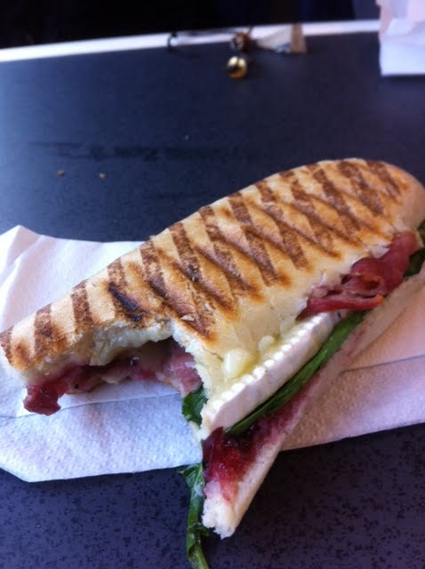

The Jen Sandwich

Thanking my Mum Again
This Sandwich comes from my late teens/early 20's. I was at Drama 5 days a
week, working or at the gym straight after and I was getting home around
23:00 everynight. Too late to cook a nice decent meal, too fussy to put
crap like pot noddles into my body. My mum knew the answer and would often
makes this bad boy just as I would arrive home. It became a favourite in
the household. When friends came over, they would inquire to see if said
sandwich was on the menu/availale for the night. Thanks Mum.
Ingredients
- Brie Cheese
- Bacon
- Cranberry Jam
- Pannini
The How Too
-
Get your sefl a Jen - if she is unavailbe, your on your own abd should
follwo the steps below.
-
Turn on Sandwich Grilling Machine (I used the George Foreman LEAN MEAN
FAT REDCUING MACHINE)
-
Get frying or Griling your bacon (2-3 rashes) in your frying pan or oven
grill.
- Cut Pannini in half lenght wise
- Spread a nice layer of Cranberry jam across the bottom half.
- Once bacon is cooked, lay bacon on the bottom half of the Pannini
- Slice Brie Generously and place ontop of cooked bacon
-
Close Pannini, place of Sandwich Grill, close and let the magic happen
(between 1-3 mins)
- If you done it right, the Brie should be melted and slightly over
spillin.
- ENJOY another banging sandwich!
I'm not sure you know what I did there, but I made the colors to look like I the order of the sandwich. (bread, bacon, brie, cranberry, bread.)